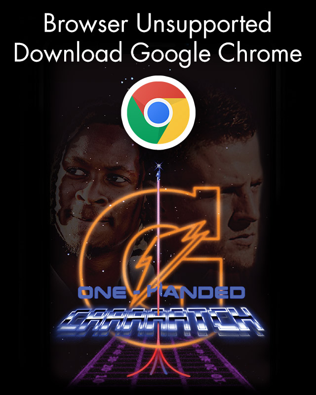

<!doctype html>
<html lang="en">

<head>
  <!-- Global site tag (gtag.js) - Google Analytics -->
  <script async src="https://www.googletagmanager.com/gtag/js?id=UA-71149706-5"></script>
  <script>
    window.dataLayer = window.dataLayer || [];
    function gtag() { dataLayer.push(arguments); }
    gtag('js', new Date());

    gtag('config', 'UA-71149706-5');
  </script>

  <title>Gatorade: One-Handed Caaaaatch</title>
  <meta name="viewport" content="width=device-width, initial-scale=1.0, maximum-scale=1.0, user-scalable=no" />
  <meta name="HandheldFriendly" content="true" />

  <meta property="description" content="Play now." />
  <meta property="keywords" content="gatorade, one, handed, catch, caatch, caaatch, caaaatch, caaaaatch, caaaaaatch, football, game" />
  <meta property="og:type" content="games.celebrate" />
  <meta property="og:title" content="Gatorade: One-Handed Caaaaatch" />
  <meta property="og:description" content="Play now." />
  <meta property="og:image" content="https://onehandedcaaaaatch.com/assets/seo/gatorade-onehandedcaaaaatch-1200x628.jpg" />
  <meta property="og:keywords" content="gatorade, one, handed, catch, caatch, caaatch, caaaatch, caaaaatch, caaaaaatch, football, game" />
  <meta property="og:url" content="https://onehandedcaaaaatch.com" />
  <meta property="twitter:title" content="Gatorade: One-Handed Caaaaatch" />
  <meta property="twitter:description" content="Play now." />
  <meta property="twitter:image" content="https://onehandedcaaaaatch.com/assets/seo/gatorade-onehandedcaaaaatch-1024x512.jpg" />
  <meta property="twitter:url" content="https://onehandedcaaaaatch.com" />
  <!-- <script type="text/javascript" src="yconsole.js"></script>
    <script type="text/javascript" >YConsole.show();</script> -->
  <style>
    body,
    #game {
      margin: 0;
      padding: 0;
      border: 0;
    }

    #game {
      position: absolute;
    }

    body {
      height: 100vh;
      background: black;
      -webkit-user-select: none;
      -moz-user-select: none;
      -ms-user-select: none;
      user-select: none;
    }
  </style>
  <script src="dist/bundle.js"></script>
</head>

<body>
  <script>
    if (navigator.userAgent.indexOf('MSIE ') >= 0) {
      requestUnsupportedPage()
    }

    document.addEventListener('gesturestart', handleGesture)
    document.addEventListener('gesturechange', handleGesture)
    document.addEventListener('gestureend', handleGesture)

    function handleGesture(e) {
      e.preventDefault();
      document.body.style.zoom = 0.99;
    }

    function requestUnsupportedPage() {
      if (!window.document.body) {
        requestAnimationFrame(requestUnsupportedPage())
      }

      window.document.body.innerHTML = "<a href='https://www.google.com/chrome/'></a>";
    }
  </script>

  <!-- <a href="https://twitter.com/share?ref_src=twsrc%5Etfw" class="twitter-share-button" data-text="CHECK OUT THE GATORADE GAME" data-url="http://dummytest.com" data-hashtags="swampdrink" data-show-count="false">Tweet</a><script async src="https://platform.twitter.com/widgets.js" charset="utf-8"></script> -->
  <div id="game"></div>
</body>

</html>
